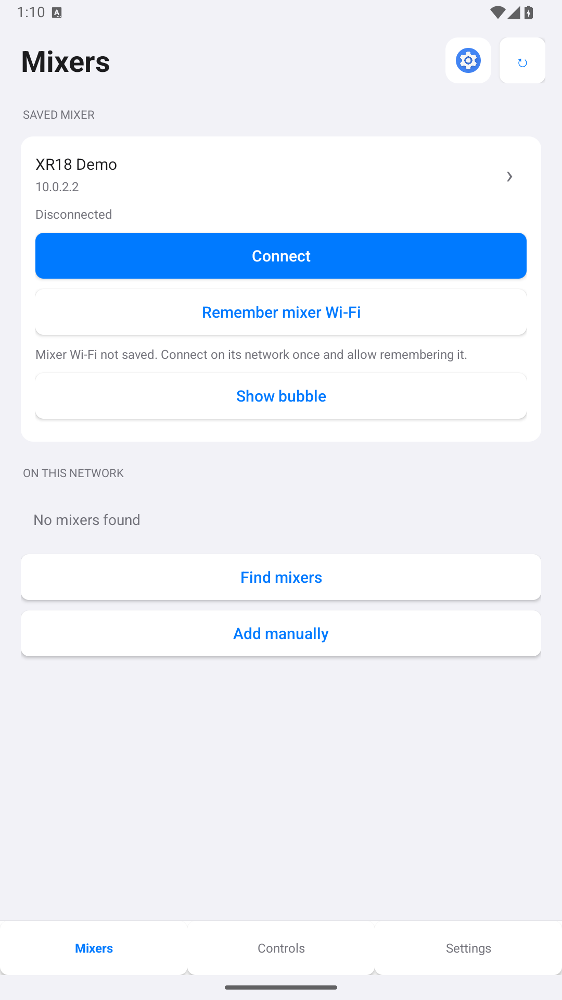
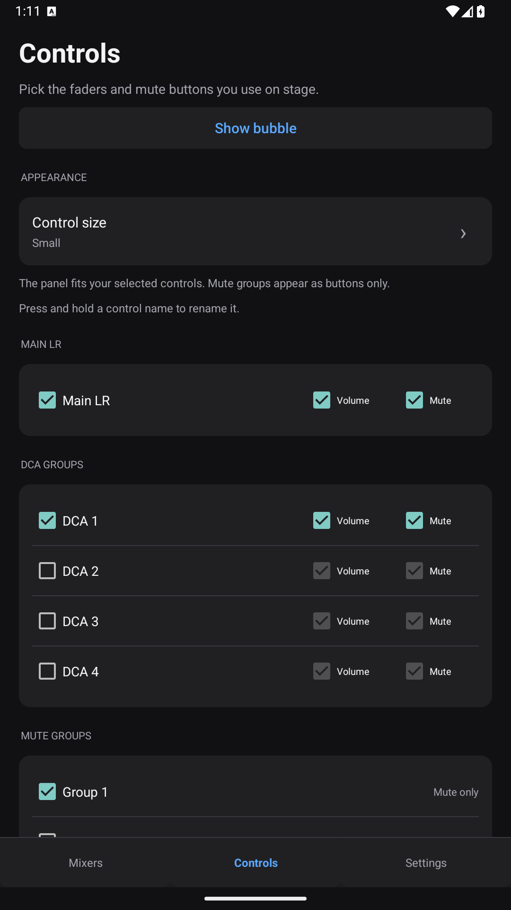
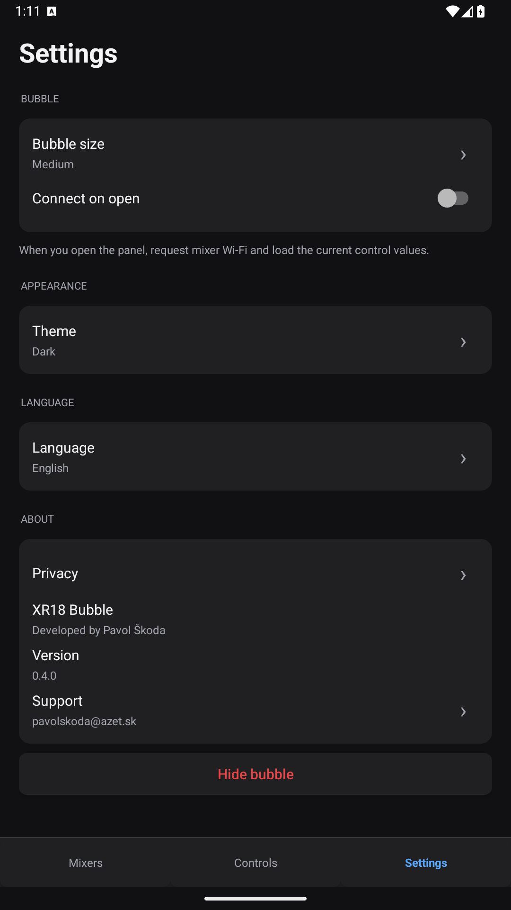

Make it yours
Choose master, DCA, channels, buses or mute groups. Seven control sizes, up to Maximum (4XL), enlarge the text, faders, meters and mute buttons.
Android 10+ · Free beta
One DCA adjustment. One mute. Keep the controls you need in a small bubble, ready from whatever app you’re using.
Version 0.4.1 · Public beta

Choose master, DCA, channels, buses or mute groups. Seven control sizes, up to Maximum (4XL), enlarge the text, faders, meters and mute buttons.
Current fader and mute values, live signal meters and a clear connection state. Controls enable after synchronization.
Save the mixer Wi-Fi after a verified connection. Request it when you open the panel, then return when you’re done.
A closer look
Pick your mixer, choose your controls and use the appearance that feels right. The panel fits your selection.

Find the mixer and save the connection. The small app shortcut stays beside refresh.

Add or remove a control with a checkbox. Select volume, mute or both.

Choose the bubble size, appearance and app language in one simple view.
Screenshots use a local demo mixer. Select an image to view it full size. Larger controls scroll to fit your screen. To stop the bubble, drag it onto the × target at the bottom.
Why I built it
Mixing Station is a great, versatile mixer app. During a performance, though, I often need just one quick DCA adjustment or a mute. If my phone is on another Wi-Fi, that small action means reconnecting, opening the app, selecting the mixer and finding the right control.
I wanted those few controls in a bubble at the edge of the screen. XR18 Bubble grew from that everyday workflow, with a shortcut back to Mixing Station whenever I need the full mixer interface.
Designed for Behringer XR18/X18 and Midas MR18. Free Android beta, shared through GitHub.